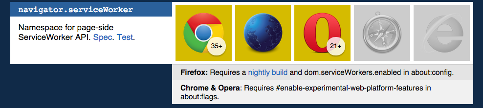

ServiceWorkers
e o futuro das aplicações no seu browser

Eduardo Matos
@eduardojmatos
Laboratório de programação
*estamos contratando!POA é a
San Francisco do Brasil!
O que é um worker?
Primeira definição de Worker surgiu com o WebWorkers http://www.html5rocks.com/en/tutorials/workers/basics/
Browser executando tarefas sem bloquear a interface
Resumindo: scripts rodando em paralelo à pagina
EX: tarefas que exigem alto processamento
// main script
var worker = new Worker('worker.js');
worker.addEventListener('message', function(e) {
console.log('Worker diz: ', e.data);
}, false);
worker.postMessage('Oi, eu sou o Worker!');
// worker.js
self.addEventListener('message', function(e) {
self.postMessage(e.data);
}, false);
Regras comuns de um Worker
- Não acessa o DOM
- Não acessa o
window - Não acessa o
document - Acessa o
navigator - Acessa o
location (ready-only)
E o ServiceWorkers?
- Usa o mesmo conceito do WebWorker de isolar execução de um script
- Controla programaticamente o cache da sua aplicação
- Serve como um proxy da sua aplicação
- [futuramente] BackgroundSync (!!)
- [futuramente] Geofencing (!!!)
- [futuramente] Push Notifications (!!!!)
- [futuramente] Bluetooth (!!!!!)
Offline control
Vai Application Cache!
A forma de cachear arquivos parecia simples...
http://diveintohtml5.info/offline.html
AppCache is a douchebag!
http://alistapart.com/article/application-cache-is-a-douchebag http://sergiolopes.org/palestra-appcache-html5-offline http://eduardomatos.me/appcache-manifest-e-serviceworker-as-partes-boas-e-ruinsLá vem o ServiceWorkers
// main script
navigator.serviceWorker.register("/assets/worker.js").then(
function ( serviceWorker ) {
serviceWorker.postMessage("ServiceWorkers instalado com sucesso.");
},
function ( error ) {
console.error("Ops.. não rolou a instalação do ServiceWorkers", error);
});
Interceptando requests
// assets/worker.js
var base = "https://meu.server.com";
var data_url = new URL("/data/posts.json", base) + "";
self.addEventListener("fetch", function(e) {
var url = e.request.url;
console.log(url);
if (url == data_url) {
e.respondWith(
new Response(JSON.stringify({
posts: { /* ... */ }
}), {
headers: { 'Content-Type': 'application/json' },
status: 200
})
);
}
});
Cacheando seus assets
// assets/worker.js
self.version = 1;
var base = "https://meu.server.com"
// Listener para a instalação do ServiceWorkers
self.addEventListener("install", function ( e ) {
var myResources = new Cache (
base + "/index.html",
base + "/assets/application.css",
base + "/assets/application.js",
base + "/assets/logo.png",
base + "/data/posts.json",
base + "/data/posts_fallback.json"
);
e.waitUntil(myResources.ready());
caches.set("caches-" + self.version, myResources);
});
Request + Cache
// assets/worker.js
self.version = 2;
var base = "https://meu.server.com"
var data_url = new URL("/data/posts.json", base) + "";
self.addEventListener("fetch",
function ( e ) {
if (e.request.url == data_url) {
e.respondWith(
caches.match( e.request )
.catch( function () {
return e.default;
})
.catch( function () {
return caches.match("/data/posts_fallback.json");
})
);
}
}
);
Exemplo de ServiceWorkers
https://jakearchibald.github.io/trained-to-thrill/E a segurança disso?
- Funciona apenas com https
- Escopo por domains
BACKGROUND SYNC
Ainda muito recente
// main script
navigator.serviceWorker.register("/assets/worker.js");
navigator.serviceWorker.ready.then(function (sw) {
// Returns a Promise
navigator.sync.register(
"my_data_sync",
{
minInterval: 86400 * 1000, // ms, default: heuristic
repeating: true, // default: false
data: '', // default: empty string
description: '', // default: empty string
lang: '', // default: document lang
dir: '' // default: document dir
}
).then(function() { // Success
// No resolved value
// Success, sync is now registered
},
function() { // Failure
// If no SW registration
// User/UA denied permission
// Sync id already registered
});
});
// assets/worker.js
self.onsync = function(event) {
var data = JSON.parse(event.data);
if (event.id === "my_data_sync") {
if (data.whatever === "foo") {
// rejection is indication that the UA should try
// later (especially when network is ok)
event.waitUntil(doAsyncStuff());
}
} else {
// Garbage collect unknown syncs (perhaps from older pages).
navigator.sync.unregister(event.id);
}
};
Geofencing
Nem a spec foi definida.
Bluetooth
Spec ainda engatinhando
https://github.com/WebBluetoothCG/web-bluetooth http://www.w3.org/community/web-bluetoothOnde funciona?
https://jakearchibald.github.io/isserviceworkerready/ Porque esse hype todo?
- JavaScript chegando no app nativo
- Evolução e maior controle das aplicações
- Acesso a funcionalidades do sistema do usuário (bluetooth, push notifications...)
Obrigado!
link da palestra: http://bit.ly/serviceworkers-tdc2014
meu twitter: @eduardojmatos